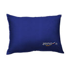
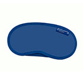
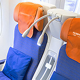
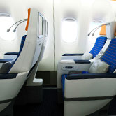
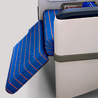

<!DOCTYPE HTML PUBLIC "-//W3C//DTD XHTML 1.0 Transitional//EN" "http://www.w3.org/TR/xhtml1/DTD/xhtml1-transitional.dtd">
<html xmlns="http://www.w3.org/1999/xhtml" xml:lang="ru" lang="ru" dir="ltr">
<head>
    <meta http-equiv="Content-Type" content="text/html; charset=utf-8" />
    <link rel="stylesheet" href="../css/vendor/aeroflot.css"/>
    <title>Аэрофлот</title>

    <link type="text/css" rel="stylesheet" media="screen" href="../css/vendor/booking.css?3" />
    <link type="text/css" rel="stylesheet" media="screen" href="../css/vendor/reset.css?3" />
    <link type="text/css" rel="stylesheet" media="screen" href="../css/vendor/layout.css?3" />
    <link type="text/css" rel="stylesheet" media="screen" href="../css/vendor/layout3.css?3" />
    <link type="text/css" rel="stylesheet" media="screen" href="../css/vendor/colorbox.min.css?3" />
    <link type="text/css" rel="stylesheet" media="screen" href="../css/vendor/jquery-ui-1.10.4.custom.min.css?3" />
    <link type="text/css" rel="stylesheet" media="screen" href="../css/vendor/style-afl.css?3" />
    <link type="text/css" rel="stylesheet" media="screen" href="../css/vendor/style.css?3" />
    <link type="text/css" rel="stylesheet" media="screen" href="../css/vendor/comfort.css?3" />
    <link type="text/css" rel="stylesheet" media="screen" href="../css/vendor/style_ru.css?3" />
    <link type="text/css" rel="stylesheet" media="print" href="../css/vendor/print.css?3" />
    <link rel="stylesheet" href="../css/fancybox.css">
    <link rel="stylesheet" href="../css/comfort.css">

    <!--[if IE 7]>
    <link rel="stylesheet" type="text/css" href="../css/vendor/ie7.css?3" />
        <link rel="stylesheet" type="text/css" href="../css/vendor/ie7.2.css?3" />
    <![endif]-->
    <!--[if IE 8]>
        <link rel="stylesheet" type="text/css" href="../css/vendor/ie8.css?3" />
    <![endif]-->
    <!--[if IE 9]>
        <link rel="stylesheet" type="text/css" href="../css/vendor/ie9.css?3" />
    <![endif]-->

    <script type="text/javascript" src="../js/vendor/jquery-1.11.0.min.js?3"></script>
    <script type="text/javascript" src="../js/vendor/drupal.js?3"></script>
    <script type="text/javascript" src="../js/vendor/ru_db6ab39492ad01b9da6fe05b42b6c1f3.js?3"></script>
    <!-- <script type="text/javascript" src="../js/vendor/booking.js?3"></script> -->
    <script type="text/javascript" src="../js/vendor/jumpSelect.js?3"></script>
    <script type="text/javascript" src="../js/vendor/jquery.cycle-3.0.3.min.js?3"></script>
    <script type="text/javascript" src="../js/vendor/jquery.colorbox-1.5.4.min.js?3"></script>
    <script type="text/javascript" src="../js/vendor/layout.js?3"></script>
    <script type="text/javascript" src="../js/vendor/jquery.flash-1.0.1.min.js?3"></script>
    <script type="text/javascript" src="../js/vendor/jquery.bootstrap.tooltip.min.js?3"></script>
    <script type="text/javascript" src="../js/vendor/jquery.fancyfields.min.js?3"></script>
    <script type="text/javascript" src="../js/vendor/jquery-ui-1.10.4.custom.min.js?3"></script>
    <script type="text/javascript" src="../js/vendor/i18n.min.js?3"></script>
    <script type="text/javascript" src="../js/vendor/afl.js?3"></script>
    <script type="text/javascript" src="../js/vendor/comfort.js"></script>
    <script src="../js/vendor/fancybox.js"></script>
    <script src="../js/jquery.scrollTo.min.js"></script>
    <script src="../js/jquery.class.js"></script>
</head>
<body class="yui-skin-sam page-type-content">
    <div class="main-body">
        
        
        <script>
            ;(function($) {
                    $(function() {
                        $('a.fancy-img').fancybox({
                            padding: 30
                        });
                        $('a.fancy-iframe').fancybox({
                            type: 'iframe',
                            width: 911,
                            height: 480,
                            padding: 30
                        });
                        $('a.fancy-video').fancybox({
                            'padding': 30,
                            'autoScale'     : false,
                            'transitionIn'  : 'none',
                            'transitionOut' : 'none',
                            'width'     : 680,
                            'height'        : 495,
                            'type'          : 'swf',
                            'swf'           : {
                              'wmode'       : 'transparent',
                                'allowfullscreen'   : 'true'
                            }
                        });
                    });
                })(jQuery);
        </script>
        <div class="af_content">
            <!-- comfort BEGIN -->
            <div class="cclWrapper">
                <div class="cclAnchor_wrapper">
                    <div class="cclAnchor ccl-anchor-js">
                        <a href="#anchor1">
                            <i class="cclIco cclIco-3"></i>
                            <span>Пространство класса Комфорт</span>
                        </a>
                        <a href="#anchor2">
                            <i class="cclIco cclIco-4"></i>
                            <span>Кресло</span>
                        </a>
                        <a href="#anchor3">
                            <i class="cclIco cclIco-5"></i>
                            <span>Система развлечений</span>
                        </a>
                        <a href="#anchor4">
                            <i class="cclIco cclIco-6"></i>
                            <span>Кухня</span>
                        </a>
<!--
                        <a href="#anchor5">
                            <i class="cclIco cclIco-7"></i>
                            <span>Напитки</span>
                        </a>
-->
                    </div>
                </div>
                <div class="cclTop">
                    <div class="cclNav">
                        <a href="comfort_1.html" class="cclNav-before">Перед полетом</a>
                        <a href="comfort_2.html" class="cclNav-underway current">На борту</a>
                        <a href="comfort_3.html" class="cclNav-after">После полета</a>
                    </div>
                    
                    <div class="cclTitle">класс Комфорт</div>
                </div>
                <div class="cclContent">
                    <!-- promo BEGIN -->
                    <div class="cclPromoText">
                        <div class="cclPromoText_header">Ваше комфортное пространство</div>
                        <p>Комфорт на борту — это продуманное до мелочей окружающее пассажиров пространство. Каждая деталь имеет значение: расстояние между креслами, угол наклона спинки кресла, наличие USB-порта или розетки для зарядки мобильных устройств, материалы, освещение и многое другое.</p>
                    </div>
                    <!-- promo END -->
                    <div class="cclHeader" id="anchor1">
                        <i class="cclIco cclIco-3"></i>
                        Пространство класса Комфорт
                    </div>
                    <div class="ccl_clear cclText">
                        <div class="cclText_column side">
                            <div class="cclText_header">Факты о классе Комфорт</div>
                            <ul>
                                <li>Возраст самолетов Boeing 777 в <a href="#">парке</a> Аэрофлота составляет не более двух лет.</li>
                                <li>Расстояние между креслами — 97 сантиметров.</li>
                                <li>Ширина кресла в классе Комфорт — 49 сантиметров.</li>
                                <li>Кресла оснащены USB-портом и розеткой для подзарядки Ваших мобильных устройств и компьютера.</li>
                                <li>Во время полета предлагаются блюда меню Бизнес класса, сервированные в фарфоровой и стеклянной посуде.</li>
                            </ul>
                        </div>
                        <div class="cclText_column">
                            <div class="cclText_header">Описание пространства класса Комфорт</div>
                            <p>Класс Комфорт Аэрофлота представлен на самолетах Boeing 777, выполняющих перелеты дальней протяженности, поэтому разрабатывая пространство данного класса мы позаботились о множестве деталей, которые помогут Вам отдохнуть и насладиться перелетом: увеличенное пространство для ног, удобные кресла, мультимедийная система развлечений и не только.</p>
                        </div>
                    </div>
                    <div class="ccl_clear cclText cclMedia_columns">
                        <div class="cclText_column side">
                            
                            <div class="cclChair_title">Расстояние между креслами класса Комфорт – 95 см</div>
                        </div>
                        <div class="cclText_column">
                            <a class="cclMedia_item fancy-iframe" href="http://lavdanskie.ru/aeroflotfeb2015/777_1/">
                                
                                <span class="cclMedia_title">3D панорама <br> салона</span>
                            </a>
                        </div>
                    </div>
                    <div class="cclAccessories">
                        <div class="cclAccessories_header">Аксессуары на борту</div>
                        <div class="cclAccessories_list">
                            <div class="cclAccessories_item">
                                <div class="cclAccessories_img"><div class="cclAccessories_tab"><div class="cclAccessories_cell">
                                    
                                </div></div></div>
                                <div class="cclAccessories_label">Удобная подушка</div>
                            </div>
                            <div class="cclAccessories_item">
                                <div class="cclAccessories_img"><div class="cclAccessories_tab"><div class="cclAccessories_cell">
                                    
                                </div></div></div>
                                <div class="cclAccessories_label">Маска для сна</div>
                            </div>
                            <div class="cclAccessories_item">
                                <div class="cclAccessories_img"><div class="cclAccessories_tab"><div class="cclAccessories_cell">
                                    
                                </div></div></div>
                                <div class="cclAccessories_label">Плед</div>
                            </div>
                            <div class="cclAccessories_item">
                                <div class="cclAccessories_img"><div class="cclAccessories_tab"><div class="cclAccessories_cell">
                                    
                                </div></div></div>
                                <div class="cclAccessories_label">Носочки</div>
                            </div>
                        </div>
                    </div>
                    <div class="cclHeader cclHeader-nobd" id="anchor2">
                        <i class="cclIco cclIco-4"></i>
                        Кресло
                    </div>
                    <div class="cclInterior">
                        <!-- interior BEGIN -->
                        <div class="comfort-img-holder">
                            
                        </div>
                        <div class="comfort-links">
                            <div class="comfort-plus comfort-plus-1">
                                <div class="comfort-plus-icon">
                                    
                                    <div class="comfort-plus-title">
                                        Индивидуальная подсветка
                                    </div>
                                </div>
                                <div class="comfort-plus-text">
                                    <div class="comfort-plus-text-title">
                                        Индивидуальная подсветка
                                    </div>
                                    <div class="comfort-plus-desc">
                                        Индивидуальная система подсветки позволят Вам устроить «мини-офис», чтобы не только отдыхать во время полета, но и с комфортом работать.
                                    </div><span class="comfort-plus-text-bg"></span> <a class="comfort-plus-close" href="#">x</a>
                                </div>
                            </div>
                            <div class="comfort-plus comfort-plus-2">
                                <div class="comfort-plus-icon">
                                    
                                    <div class="comfort-plus-title">
                                        Особенность класса Комфорт
                                    </div>
                                </div>
                                <div class="comfort-plus-text">
                                    <div class="comfort-plus-text-title">
                                        Особенность класса Комфорт
                                    </div>
                                    <div class="comfort-plus-desc">
                                        Особенность класса Комфорт — широкие* новые кресла с увеличенным шагом** между рядами, выполненные по технологии Shell (Раковина), которая позволяет создать личное пространство в полете и удобно расположиться не мешая соседу
                                         <div class="comfort-plus-hint">* ширина кресел экономического класса – 17’’, класса Комфорт – 20’’</div>
                                         <div class="comfort-plus-hint">** шаг кресел экономического класса – 32’’, класса Комфорт – 38’’</div>
                                    </div>
                                    <span class="comfort-plus-text-bg"></span>
                                    <a class="comfort-plus-close" href="#">x</a>
                                </div>
                            </div>
                            <div class="comfort-plus comfort-plus-3">
                                <div class="comfort-plus-icon">
                                    
                                    <div class="comfort-plus-title">
                                        Дорожный набор
                                    </div>
                                </div>
                                <div class="comfort-plus-text">
                                    <div class="comfort-plus-text-title">
                                        Дорожный набор
                                    </div>
                                    <div class="comfort-plus-desc">
                                        Для удобства во время полёта Вам предоставят дорожный набор.
                                    </div><span class="comfort-plus-text-bg"></span> <a class="comfort-plus-close" href="#">x</a>
                                </div>
                            </div>
                            <div class="comfort-plus comfort-plus-4">
                                <div class="comfort-plus-icon">
                                    
                                    <div class="comfort-plus-title">
                                        Удобная подставка для ног
                                    </div>
                                </div>
                                <div class="comfort-plus-text">
                                    <div class="comfort-plus-text-title">
                                        Удобная подставка для ног
                                    </div>
                                    <div class="comfort-plus-desc">
                                        Удобная подставка для ног сделают Ваш перелет приятным и легким.
                                    </div><span class="comfort-plus-text-bg"></span> <a class="comfort-plus-close" href="#">x</a>
                                </div>
                            </div>
                            <div class="comfort-plus reverse comfort-plus-5">
                                <div class="comfort-plus-icon">
                                    
                                    <div class="comfort-plus-title">
                                        Монитор
                                    </div>
                                </div>
                                <div class="comfort-plus-text">
                                    <div class="comfort-plus-text-title">
                                        Монитор
                                    </div>
                                    <div class="comfort-plus-desc">
                                        Монитор с диагональю 10,6 дюймов новой системы развлечения Thales
                                    </div><span class="comfort-plus-text-bg"></span> <a class="comfort-plus-close" href="#">x</a>
                                </div>
                            </div>
                            <div class="comfort-plus reverse comfort-plus-6">
                                <div class="comfort-plus-icon">
                                    
                                    <div class="comfort-plus-title">
                                        Раскладывающийся столик
                                    </div>
                                </div>
                                <div class="comfort-plus-text">
                                    <div class="comfort-plus-text-title">
                                        Раскладывающийся столик
                                    </div>
                                    <div class="comfort-plus-desc">
                                        Большой, сдвижной,<br>
                                        раскладывающийся столик.
                                    </div><span class="comfort-plus-text-bg"></span> <a class="comfort-plus-close" href="#">x</a>
                                </div>
                            </div>
                            <div class="comfort-plus reverse comfort-plus-7">
                                <div class="comfort-plus-icon">
                                    
                                    <div class="comfort-plus-title">
                                        Важное преимущество кресел
                                    </div>
                                </div>
                                <div class="comfort-plus-text">
                                    <div class="comfort-plus-text-title">
                                        Важное преимущество кресел
                                    </div>
                                    <div class="comfort-plus-desc">Важное преимущество кресел - инновационный механизм управления, который слегка сдвигает пассажира вперед, обеспечивая максимальный комфорт. За счет этого ни одно кресло в салоне ни откидывается назад и не мешает личному комфорту пассажиров.        </div>
                                    <span class="comfort-plus-text-bg"></span>
                                    <a class="comfort-plus-close" href="#">x</a>
                                </div>
                            </div>
                        </div>
                        <div class="comfort-overlay"></div>
                    </div>
                    <!-- interior END -->
                    <div class="ccl_clear cclText cclMedia_columns">
                        <div class="cclText_column side">
                            
                            <div class="cclText_header">Сон на борту</div>
                            <p>В классе Комфорт мы позаботились, чтобы Вы могли выспаться во время перелета. К Вашим услугам удобные кресла с подставкой для ног и отклоняющейся спинкой, подушки и пледы, персональные дорожные наборы.</p>
                        </div>
                        <div class="cclText_column">
                            
                            <div class="cclText_header">Рабочее место</div>
                            <p>Ваш перелет может быть не только комфортным, но и продуктивным. Для этого кресло класса Комфорт оборудовано USB-портом и розеткой для подзарядки компьютера и мобильных устройств, индивидуальной системой подсветки и раздвижным столиком.</p>
                        </div>
                    </div>
                    <div class="cclHeader" id="anchor3">
                        <i class="cclIco cclIco-5"></i>
                        Система развлечений
                    </div>
                    <div class="ccl_clear cclText">
                        
                        <div class="ccl_zfix">
                            <div class="cclText_header">Описание мультимедийных возможностей</div>
                            <p>Длительный перелет не покажется скучным с развлекательной мультимедийной системой Thales. Классика и новинки кинематографа, аудиокниги и более 600 музыкальных альбомов, компьютерные игры и мультфильмы для детей — это далеко не вся программа, предлагаемая к услугам пассажиров на дальнемагистральных рейсах Аэрофлота. Вы также можете увидеть в режиме реального времени карту Вашего полета или картинку с внешней видео-камеры.</p>
                            <p><a href="http://www.aeroflot.ru/cms/flight/on_board/president/entertainment_1">Узнайте больше о мультимидийных возможностях</a></p>
                            <div class="cclText_header">Интернет на борту</div>
                            <p>На всех самолетах типа Boeing 777 парка Аэрофлота Вы сможете воспользоваться беспроводным доступом в интернет.
                                Оплатить Wi-Fi на борту можно кредитной или дебетовой картой во время полета. К оплате принимаются карты VISA, MasterCard, American Express, JCB и Discover.</p>
                            <p><a href="http://www.aeroflot.ru/cms/flight/on_board/at_height">Список самолетов с Wi-Fi на борту и инструкция подключения</a></p>
                        </div>
                    </div>
                    
                    <div class="cclHeader" id="anchor4">
                        <i class="cclIco cclIco-6"></i>
                        Кухня
                    </div>
                    <div class="cclCousine">
                        <div class="cclCousine_promo">Мы рады предложить пассажирам класса Комфорт меню Бизнес класса, которое является образцом по-настоящему «высокой» и изысканной кухни. Для разработки меню Бизнес класса мы приглашаем лучших шеф-поваров российских и зарубежных ресторанов, а также специалистов «высокой кухни», которые заботятся о том, чтобы в условиях полета еда сохраняла свои вкусовые качества.</div>
                        <div class="ccl_clear cclCousine_columns">
                            <div class="cclCousine_chef">
                                
                                <div class="cclCousine_chefName">Тьерри Мона</div>
                                Шеф-повар
                            </div>
                            <div class="cclCousine_main">
                                <div class="cclCousine_quote">Я мог бы стать моряком, но в итоге поступил в кулинарное училище. Я с детства готовил сам — и для себя, и для своих младших сестер. И сейчас продолжаю. Правда, дома готовит жена, я не успеваю, у меня работа почти круглосуточная. А вот в выходные, в отпуске — люблю готовить для родных.</div>
                                <a href="http://www.aeroflot.ru/cms/flight/exquisite_food" class="cclBtn">Посмотреть меню</a>
                            </div>
                        </div>
                    </div>
<!--
                    <div class="cclHeader" id="anchor5">
                        <i class="cclIco cclIco-7"></i>
                        Напитки
                    </div>
                    <div class="ccl_clear cclText">
                        
                        <div class="ccl_zfix">
                            <div class="cclText_header">По какому принципу отбираются вина для класса Комфорт «Аэрофлота»?</div>
                            <p>Каждый полет – это способ открыть что-то новое, насладиться новыми ощущениями, получить неповторимые эмоции. Почему бы не начать делать открытия еще во время полета? Именно поэтому мы приготовили для наших пассажиров изысканный ассортимент напитков, в том числе и вин.</p>
                        </div>
                    </div>
-->
                </div>
                <!-- links BEGIN -->
                <div class="cclLinks">
                    <a href="http://www.aeroflot.ru/cms/before_and_after_fly/taxi" class="cclLinks_item">
                        <span class="cclLinks_title">Заказ такси</span>
                        
                    </a>
                    <a href="http://www.aeroflot.ru/cms/flight/shopping_onboard_ec" class="cclLinks_item">
                        <span class="cclLinks_title">Покупки <br> на борту <br> и Duty Free</span>
                        
                    </a>
                    <a href="http://www.aeroflot.ru/cms/flight/on_board/at_height" class="cclLinks_item marked">
                        <span class="cclLinks_title">Интернет <br> на борту</span>
                        
                    </a>
                    <a href="https://www.aeroflot.ru/cms/before_and_after_fly/medical_info" class="cclLinks_item">
                        <span class="cclLinks_title">Медицинская информация</span>
                        
                    </a>
                </div>
                <a href="#" class="cclOnBoard_reverse">На борту</a>
                <!-- TODO: сделать в одну строку -->
                <a href="comfort_1.html" class="cclOnBoard_reverse">Перед полетом</a>
                <a href="comfort_3.html" class="cclOnBoard">После полета</a>
            </div>
            <!-- comfort END -->
        </div>


    </div>


</body>
</html>
